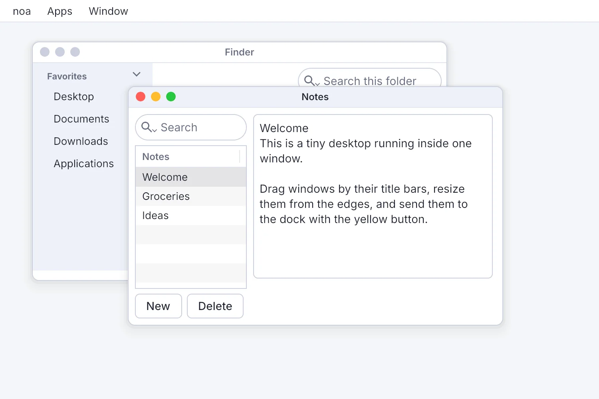
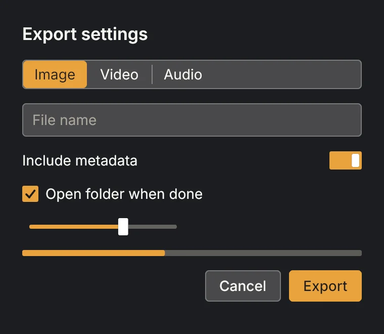
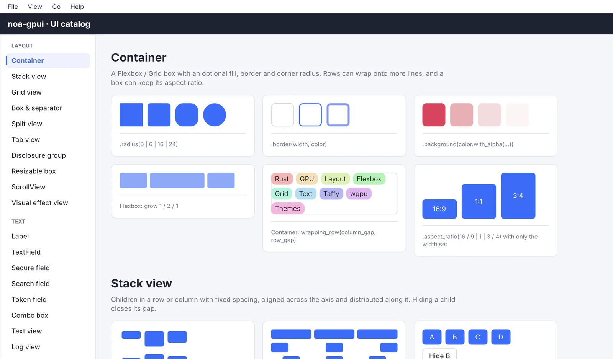

GPU UI フレームワーク · v0.1.0 · MIT
Rust で書いて、GPU で描く。
Windows・macOS・Linux・Web で同じコードが動く、Rust 製の UI フレームワーク。 テーブルやターミナル、コマンドパレットまで揃った部品を、WebView を使わずに GPU が直接描きます。


変化がなければ、描かない。
変化のないフレームは描画しないので、待機中の GPU は 0 FPS。変わった部分だけをレイアウトし直し、それ以外の描画コマンドは前のフレームから再利用します。
60Hz の 1 フレーム（16.7 ms）を物差しにすると
UiTree::prepare （レイアウトと描画リストの組み立て）の p95。GPU の描画は含みません。最適化前の 4.38 ms から 300 分の 1 以下に。- 目盛り 16 ms
- 10 万行テーブル、1 フレームの上限。1 フレームでも超えるとベンチマークが失敗し、CI と同じ検査（
verify.sh --full）を通りません。
いずれも p95、計測環境は Apple M1 Pro。止まっている画面では、物差しは空のままです。数値と条件は docs/architecture.md に記録されています。手元では cargo bench -p noa-gpui-core --bench table で再現できます。
- WindowsDirect3D 12
- macOSMetal
- LinuxVulkan
- WebWebGPU → WebGL2日本語表示・IME は未対応
12 グループ・87 項目の部品カタログ
部品は macOS の標準部品に倣っています。データグリッドはスプレッドシートとの貼り付け、CSV の入出力、取り消しとやり直しまで備えています。

cargo run -p desktop --release -- --scene=catalog の最初の画面- Layout
- Stack · Grid · Split view · Tab view · Accordion · ScrollView
- Text
- TextField · Token field · Combo box · Text view · Log view · Terminal
- Controls
- Button · Checkbox · Radio · Switch · Pop-up · Segmented
- Values & Inputs
- Slider · Stepper · Color well · Date picker · Number input · Find bar
- Data
- Table · Data grid · Chart · Outline · Collection · Rule editor
- Menus & Navigation
- Menu bar · Toolbar · Command palette (⌘K) · Breadcrumbs
- Presentation
- Alert · Sheet · Drawer · Popover · Tooltip · Inner windows
- Notices & Status
- Toast · Banner · Badge · Skeleton · Progress · Spinner
全項目は README の UI カタログ一覧にあります。
テーマで切り替える 7 つのデザイン
Theme::with_design を切り替えるだけで、角丸、ベゼル、配色が変わります。ライトとダーク、アクセント色、コントラストを上げる設定にも対応。
CSS に似た Noa Style での上書き
型・ID・クラス・状態のセレクタ、継承、@media、変数が使える Noa Style。デスクトップではファイルを保存した瞬間に再適用されるので、ビルドし直さずに見た目を詰められます。
ブラウザの CSS と互換ではないサブセットです。未知のプロパティは無視せずエラーにします。
/* 保存するとその場で反映される */
TextField, SearchField {
border-radius: 4px;
background-color: var(--field-fill);
}
Button.primary:hover {
background-color: theme(accent-hover);
}日本語入力・支援技術・OS との統合
-
日本語入力
変換中の文節は太い下線で示し、候補ウィンドウはキャレットのすぐ隣に。デスクトップの IME に対応しています。
-
スクリーンリーダー
AccessKit で OS の支援技術につなぎます。デモの全コントロールに名前があることをテストで確かめています。
-
キーボードだけで操作
Tab でデモ全体を巡回できることをテストで検証。⌘K のコマンドパレットには、メニューバーの項目をそのまま並べられます。
-
表示状態の保存
列幅、分割位置、開いたタブ、ウィンドウの位置。ユーザーが整えた配置を、次の起動で元どおりに。
-
OS との統合
macOS のメニューバー、システムトレイ、標準のファイルダイアログ、常に手前のパネルを含む複数ウィンドウ。
-
ウィンドウなしで描画
画面を PNG に書き出せます。GPU のない CI では CPU で描画。このページの製品画像もこの機能で作りました。
自前で持つのは描画だけ
残りは実績あるライブラリに任せました。wgpu の上の小さな 2D レンダラーに、Taffy のレイアウトと cosmic-text の文字組みを組み合わせ、OS ごとの違いは薄い層に閉じ込めています。
描画コマンドを境に、GPU と UI を分けています。UI は GPU に依存しない Display List を出力するだけ。描くのは wgpu の 3 本のパイプラインです。WebGL2 を最低ラインに設計しているので、Compute Shader なしで全環境が同じ描画経路を通ります。
依存の向きは一方通行で、noa-gpui-core 以下が GPU やウィンドウに依存しないことはテストで検査しています。
- あなたのアプリ
Screenトレイトを実装 - noa-gpui-platformwinit · IME · AccessKit · メニュー · ファイルダイアログ
- noa-gpui-coreWidget Tree · イベント · フォーカス · テーマ · 部品
- noa-gpui-layoutTaffy noa-gpui-textcosmic-text noa-gpui-sceneDisplay List
- noa-gpui-render-wgpuQuad · Image · Text — SDF 角丸とインスタンス描画
- D3D12MetalVulkanWebGPUWebGL2
3 ステップで最初のウィンドウを開く
Rust 1.89 以上が必要です。依存に加えるのは noa-gpui-platform ひとつです。
-
1
サンプルを動かす
git clone https://github.com/simota/noa-gpui cd noa-gpui cargo run -p noa-gpui-platform --example hello --features native部品をひととおり触るなら
cargo run -p desktop --release -- --scene=catalog。 -
2
コードを読む
// 部品を Widget Tree に置く let label = tree.insert(Some(root), Label::new("Clicked 0 times")); let button = tree.insert(Some(root), Button::new("Click me")); // ボタンからのメッセージに反応する if message.source == self.button { self.clicks += 1; let text = format!("Clicked {} times", self.clicks); self.tree.update::<Label, _>(self.label, |l, cx| l.set_text(cx, text)); }全文は examples/hello.rs（約 80 行）。
-
3
自分のアプリに入れる
[dependencies] noa-gpui-platform = { git = "https://github.com/simota/noa-gpui", features = ["native"] }まだリリースタグがないので、
rev = "<commit>"を足して版を固定するのがおすすめです。Web 向けにはnativeの代わりにwebgpuかwebgl2のどちらかひとつを有効にします。
導入前の質問
どのプラットフォームで動きますか？
Windows（Direct3D 12 / Vulkan）、macOS（Metal）、Linux（Vulkan / OpenGL）、Web（WebGPU、使えなければ WebGL2）です。iOS と Android は対象外です。
Web 版でできないことはありますか？
日本語入力（IME）、アクセシビリティ、ファイルダイアログは Web ではまだ使えません。Web には同梱の Inter フォントしかないため、日本語の表示もデスクトップのみです。
crates.io から入れられますか？
現在は Git リポジトリを直接依存に指定します（バージョン 0.1.0）。手順は上の 3 ステップのとおりです。
ライセンスは？
MIT ライセンスです。同梱の Inter フォントは SIL Open Font License です。
見た目はどこまで変えられますか？
7 種のデザイン、ライト／ダーク、アクセント色、コントラスト強調をテーマで切り替えられます。さらに Noa Style（CSS に似たサブセット）で、自作の Widget も含めた背景・枠線・角丸・余白などを上書きできます。
品質はどうやって保っていますか？
各部品は UiTree にイベントを送って結果を確かめるテストを持ち、レンダラーは GPU で実際に描いた画素を読み戻して検証します。性能はベンチマークが 16 ms の予算を超えると失敗します。2026 年 11 月時点で、ワークスペース全体のテストは 795 件です。
ミニ OS を動かす
ウィンドウを掴んで動かし、⌥Tab で切り替え、メモを書く。すべて noa-gpui の部品だけで作られています。
git clone https://github.com/simota/noa-gpui && cd noa-gpui
cargo run -p desktop --release -- --scene=minios